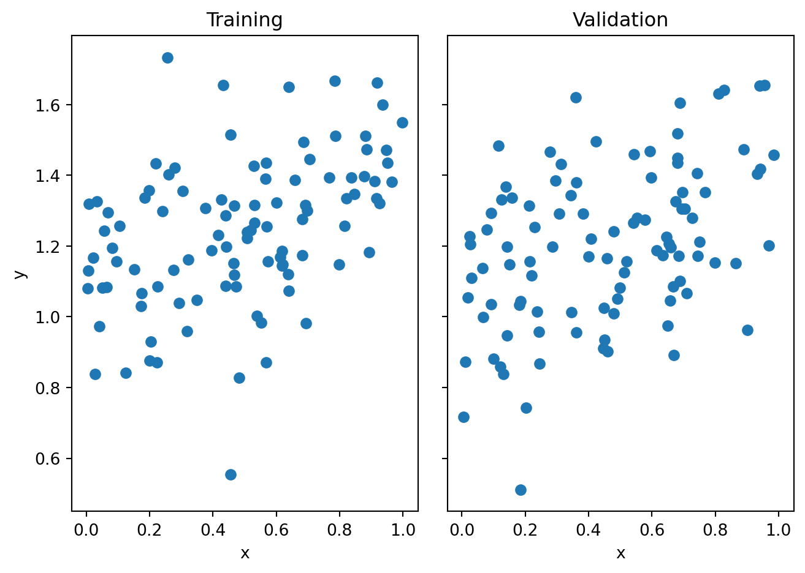
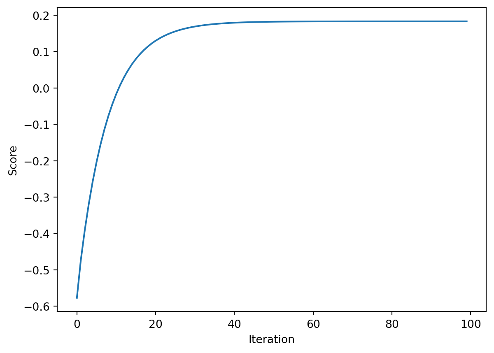

import numpy as np
from matplotlib import pyplot as plt
def pad(X):
return np.append(X, np.ones((X.shape[0], 1)), 1)
def LR_data(n_train = 100, n_val = 100, p_features = 1, noise = .1, w = None):
if w is None:
w = np.random.rand(p_features + 1) + .2
X_train = np.random.rand(n_train, p_features)
y_train = pad(X_train)@w + noise*np.random.randn(n_train)
X_val = np.random.rand(n_val, p_features)
y_val = pad(X_val)@w + noise*np.random.randn(n_val)
return X_train, y_train, X_val, y_valImplementing Linear Regression
2023-03-15
$$
$$
1 Implement Linear Regression Two Ways
To start this blog post, please implement least-squares linear regression in two ways.
- First, use the analytical formula for the optimal weight vector \(\hat{\mathbf{w}}\) from the lecture notes. This formula requires matrix inversion and several matrix multiplications.
- Next, use the formula for the gradient of the loss function to implement gradient descent for linear regression. You can still pass in
max_iterandalpha(the learning rate) as parameters to thefitmethod.
Implementing stochastic gradient descent would be nice thing to do but not required. Only if you want to go above and beyond!
In addition to the fit method, your implementation should include a score method (see below) and a predict method (just return \(\mathbf{X}\mathbf{w}\)).
It’s fine for you to either define separate methods like fit_analytic and fit_gradient for these methods. It’s also fine to define a single fit method with a method argument to determine which algorithm is used.
As usual, place your implementation in a source file where you will be able to implement it.
The Score
Let \(\bar{y} = \frac{1}{n} \sum_{i = 1}^ny_i\). Then, the score we’ll use is the so-called coefficient of determination, which is
\[ c = 1 - \frac{\sum_{i = 1}^n (\hat{y}_i - y_i)^2}{\sum_{i = 1}^n (\bar{y} - y_i)^2}\;. \]
The coefficient of determination is always no larger than 1, with a higher value indicating better predictive performance. It can be arbitrarily negative for very bad models. Note that the numerator in the fraction is just \(L(\mathbf{w})\), so making the loss small makes the coefficient of determination large.
Efficient Gradient Descent
For gradient descent, please implement a score_history so that you can visualize the value of the score over epochs.
The formula for the gradient is \[ \nabla L(\mathbf{w}) = 2\mathbf{X}^T(\mathbf{X}\mathbf{w}- \mathbf{y})\;. \] However, you should resist the urge to compute this formula “from scratch” at every iteration. The reason is that the matrix multiplication \(\mathbf{X}^T\mathbf{X}\) has time-complexity \(O(np^2)\), where \(n\) is the number of data points and \(p\) is the number of features. Similarly, the matrix-vector product \(\mathbf{X}^T\mathbf{y}\) has time-complexity \(O(np)\). Both of these can be pretty expensive if you have a lot of data points! Fortunately, they don’t depend on the current value of \(w\), so you can actually just precompute them:
- Once during the
fitmethod, compute \(\mathbf{P}= \mathbf{X}^T \mathbf{X}\) and \(\mathbf{q}= \mathbf{X}^T \mathbf{y}\). - The gradient is then \(\nabla L(\mathbf{w}) = 2(\mathbf{P}\mathbf{w}- \mathbf{q})\).
Computing \(\mathbf{P}\mathbf{w}\) requires only \(O(p^2)\) steps. In other words, precomputing \(\mathbf{P}\) and \(\mathbf{q}\) eliminates the dependence of the runtime on the number of data points – not bad!
2 Demo
The following function will create both testing and validation data that you can use to test your implementation:
Here’s an example of how to use the function to generate data. Unfortunately, it’s only possible to easily visualize this problem when p_features = 1.
n_train = 100
n_val = 100
p_features = 1
noise = 0.2
# create some data
X_train, y_train, X_val, y_val = LR_data(n_train, n_val, p_features, noise)
# plot it
fig, axarr = plt.subplots(1, 2, sharex = True, sharey = True)
axarr[0].scatter(X_train, y_train)
axarr[1].scatter(X_val, y_val)
labs = axarr[0].set(title = "Training", xlabel = "x", ylabel = "y")
labs = axarr[1].set(title = "Validation", xlabel = "x")
plt.tight_layout()
Once you’ve impmlemented your solution, you should be able to use it like this:
from solutions.linear_regression import LinearRegression
LR = LinearRegression()
LR.fit(X_train, y_train) # I used the analytical formula as my default fit method
print(f"Training score = {LR.score(X_train, y_train).round(4)}")
print(f"Validation score = {LR.score(X_val, y_val).round(4)}")Training score = 0.5687
Validation score = 0.6727The estimated weight vector \(\mathbf{w}\) is
LR.warray([0.95008323, 0.64337213])I can get the same value for \(\mathbf{w}\) using gradient descent (it would be even closer if we allowed more iterations).
LR2 = LinearRegression()
LR2.fit(X_train, y_train, method = "gradient", alpha = 0.01, max_iter = 1e2)
LR2.w(2,)
87.86018758576171
22.240124066884277
5.847641034624846
2.137081065113018
1.551810586831155
1.424562755737454
1.338469135378949
1.2597407785670018
1.1857899028831203
1.1161901105776455
1.0506761410821055
0.9890075119729055
0.930958478757133
0.8763165889878355
0.8248818628018681
0.776466058192767
0.7308919818864844
0.6879928408323571
0.6476116317692625
0.6096005666213725
0.5738205316199496
0.5401405781715815
0.5084374436095878
0.4785951000743536
0.45050432987201317
0.4240623257570076
0.39917231467569564
0.37574320359422947
0.35368924611407093
0.3329297286554041
0.31338867505972634
0.29499456853053074
0.2776800898945504
0.26138187122540535
0.24604026392832215
0.23159912043675493
0.21800558872229026
0.2052099188655142
0.19316528098017202
0.18182759382407818
0.17115536346952318
0.16110953144289084
0.151653331777523
0.14275215645684708
0.13437342875507846
0.12648648401230056
0.11906245740705175
0.11207417831637863
0.10549607087605954
0.0993040603774799
0.09347548515849878
0.08798901366572186
0.08282456638486227
0.07796324235319262
0.07338724998546985
0.06907984195976334
0.0650252539253148
0.06120864680778406
0.05761605250080207
0.05423432274528317
0.05105108100905388
0.04805467719090851
0.04523414498339277
0.042579161737991346
0.0400800106860831
0.037727545377281194
0.03551315620504704
0.03342873889704505
0.031466664854995136
0.02961975323526444
0.027881244668303145
0.02624477652057117
0.024704359608368757
0.023254356278531597
0.021889459775572266
0.02060467481995873
0.019395299326198635
0.018256907194112833
0.017185332110050622
0.016176652298911832
0.015227176171177154
0.014333428812318728
0.013492139265237518
0.012700228559135877
0.011954798441022249
0.011253120768680626
0.01059262752600801
0.009970901424696513
0.009385667057310648
0.00883478256964273
0.008316231822015676
0.007828117010505729
0.007368651721317351
0.006936154392845119
0.006529042161422039
0.006145825068374911
0.005785100606992099
0.005445548589584823
0.005125926315908854
0.004825064025029235array([0.94939606, 0.64372792])I can also see how the score changed over time. Because we’re not using stochastic gradient descent, the score should increase monotonically in each iteration.
plt.plot(LR2.score_history)
labels = plt.gca().set(xlabel = "Iteration", ylabel = "Score")
Your implementation is likely correct when you are able to reproduce results that are similar to these (although small differences are no problem).
3 Experiments
Once you’ve demonstrated the behavior above, perform an experiment in which you allow p_features, the number of features used, to increase, while holding n_train, the number of training points, constant. Try increasing p_features all the way to n_train - 1. What happens to the training score? What happens to the validation score? I’d suggest showing these results on a nice plot in which the horizontal axis is the number of features, the vertical axis is the score, and the training/validation scores are shown in different colors.
Optional: Relate your findings when
p_features = n_train-1 to the existence of a solution of the equation \(\mathbf{X}\mathbf{w}= \mathbf{y}\). What do you know about the rank of \(\mathbf{X}\)? Remember that the number of columns in \(\mathbf{X}\) is actually p_features + 1, since it’s still necessary to pad with a column of 1s.When discussing your findings, make sure to connect them to the idea of overfitting.
4 LASSO Regularization
The LASSO algorithm uses a modified loss function with a regularization term:
\[ L(\mathbf{w}) = \lVert \mathbf{X}\mathbf{w}- \mathbf{y} \rVert_2^2 + \alpha \lVert \mathbf{w}' \rVert_1\;. \]
Here, \(\mathbf{w}'\) is the vector composed of all the entries of \(\mathbf{w}\) excluding the very last entry. The 1-norm is defined as
\[ \lVert \mathbf{w}' \rVert_1 = \sum_{j = 1}^{p-1} \lvert w_j \rvert\;. \]
The effect of the regularizing term is to make the entries of the weight vector \(\mathbf{w}\) small. In fact, LASSO has a nice property: it tends to force entries of the weight vector to be exactly zero. This is very desirable in so-called overparameterized problems, when the number of features \(p\) is larger than the number of data points \(n\).
The reason we exclude the final entry of \(\mathbf{w}\) is that it is not desirable to penalize the weight corresponding to the constant feature in \(\mathbf{X}\).
Implementing LASSO involves some more complicated mathematical optimization than we will discuss in this course, so instead we’ll use the implementation in scikit-learn. You can import it like this:
from sklearn.linear_model import Lasso
L = Lasso(alpha = 0.001)Here, alpha controls the strength of the regularization (it’s not related to the learning rate in gradient descent). Let’s fit this model on some data and check the coefficients:
p_features = n_train - 1
X_train, y_train, X_val, y_val = LR_data(n_train, n_val, p_features, noise)
L.fit(X_train, y_train)Lasso(alpha=0.001)In a Jupyter environment, please rerun this cell to show the HTML representation or trust the notebook.
On GitHub, the HTML representation is unable to render, please try loading this page with nbviewer.org.
Lasso(alpha=0.001)
The score on the validation set is high, which might be different from what you found with pure linear regression.
L.score(X_val, y_val)0.6917256126475264What You Should Do
Replicate the same experiment you did with linear regression, increasing the number of features up to or even past n_train - 1, using LASSO instead of linear regression. You might want to experiment with a few values of the regularization strength alpha. Comment on how your validation score compares to standard linear regression when the number of features used is large.
© Phil Chodrow, 2024